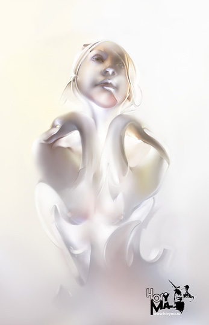
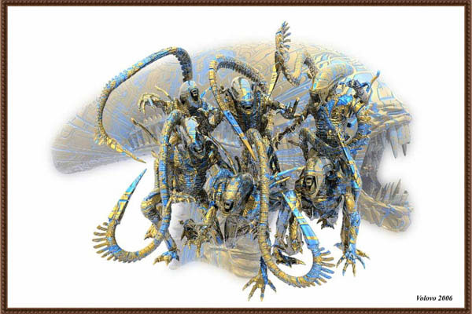
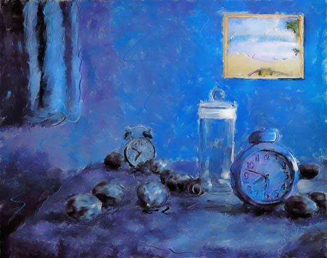
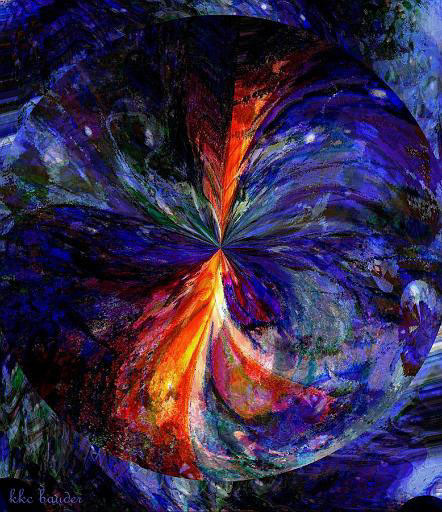
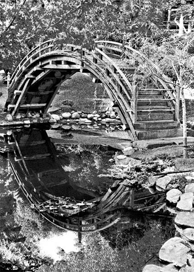
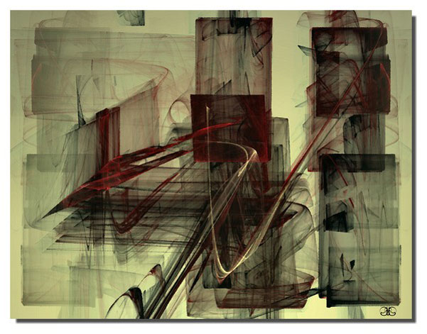

IMAGES OF THE DAY 54
12/11/2022 - 12/20/2022

Image of the Day
The Painting of Light
#CRW 6635
by HoryMa
12/11/2022
Click image to access artist's full exhibit
An Art of High Spirits
Traps
by Masanta
12/12/2022
Click image to access artist's full exhibit
 |
 |
Digital Brush Painting
Childhood Dream
by Pavel Melnichuk
12/13/2022
Click image to access artist's full exhibit

Image of the Day 
Abstract/Fantasy
Aleen's Family
by Volovo
12/14/2022
Click image to access artist's full exhibit
Guest Art 
Blue
by Pauline Black
12/15/2022
Click image to access artist's full exhibit
Guest Art
Translucent
by Shawn Henry
12/16/2022
Click image to access artist's full exhibit

Organica: Fractals
Organelle
by Pam Blackstone
12/17/2022
Click image to access artist's full exhibit

Guest Art 
A Circuitous Route
by KKC Bauder
12/18/2022
Click image to access artist's full exhibit
Guest Art 
The Bridge
by Lauren Cazden
12/19/2022
Click image to access artist's full exhibit
Guest Art 
Untitled Study No. 710
by Jamie Austin Paige
12/20/2022
Click image to access artist's full exhibit
BACK TO IMAGES OF THE DAY 53
NEXT